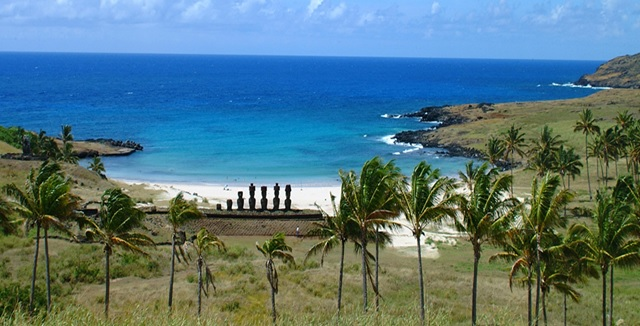
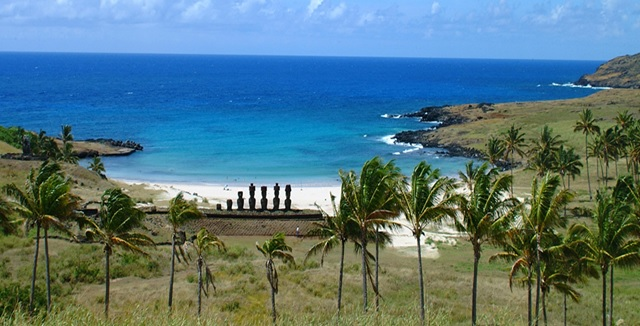

Estatuas enigmáticas
Los Moai
los moai, las estatuas gigantes que han dado fama mundial a Isla de Pascua.
Constituyen la expresión más importante del arte escultórico Rapa Nui,
El nombre completo de las estatuas en su idioma local es Moai Aringa Ora,
que significa “rostro vivo de los ancestros”. Estos gigantes de piedra fueron
hechos por los Rapa Nui para representar a sus ancestros, gobernantes o
antepasados importantes, que después de muertos tenían la capacidad de extender
su “mana” o poder espiritual sobre la tribu, para protegerla.
Las estatuas de Isla de Pascua fueron esculpidas, en un principio, en basalto,
traquita y escoria roja, pero poco después los talladores se fijaron en el
volcán Rano Raraku.
La piedra volcánica de color amarillo grisáceo, que se da exclusivamente en ese
lugar de la isla,
es un tipo de ceniza compacta con incrustaciones de basalto.
Este material, llamado toba lapilli, resultó ser más idóneo que la blanda
escoria o el durísimo basalto,
para la construcción masiva de estatuas mediante el uso de simples herramientas.

 

 1
1 3
3 5
5